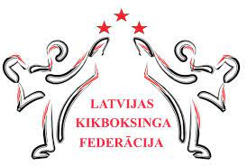

34ºc, Sunny
Tuesday, 18th June, 2019

Jaunumi
Federācija
Dokumenti
Gada pārskati
Kopsapulces protokoli
Valdes sēdes protokoli
Budžets
Sacensību rezultāti
Reitings
Biedri
Noteikumi
Valde
LKF izlase
Tiesneši
Komisijas
Tiesnešu komisija
Ērikas komisija
kalendārs
Eksaminācija
Noteikumi
Antidopings
Kontakti
WAKO kikboksa noteikumi 1
WAKO kikboksa noteikumi 2
Full contact noteikumi
Kick light noteikumi
K-1 noteikumi
WAKO Rules 25 10 2022
Noteikumi
 34ºc, Sunny Tuesday, 18th June, 2019
34ºc, Sunny Tuesday, 18th June, 2019